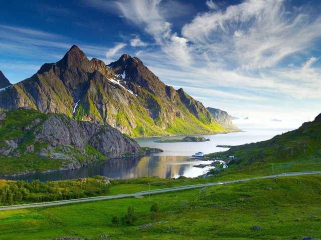

Я очень люблю путешествовать и у меня есть мечта - посетить как можно больше интересных мест по всему миру!
И в этих удивительных местах я обязательно побываю! Смотрите сами:
- Тадж-Махал, Индия
- Эйфелева башня, Франция
- Водопад Понгур, Вьетнам
- Озеро Байкал, Россия
- Райские врата, Китай